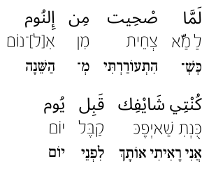

Learning Arabic
Table of Contents
1 Colloquial Arabic
1.1 Dictionaries
2 Literary Arabic
2.1 Dictionaries
3 Editing & Typesetting in Arabic
I use GNU Emacs for typing all my text, and use LaTeX to typeset the text. Emacs does not come with great input methods for Arabic. But Emacs is a great editor, and I found it a trivial matter to create my own specialized input methods:
- An input method for typing Hebrew, with full support for intuitive and easy placement of the vowels (נִיקוּד), tropes (cantillation marks, טְעָמִים), other special punctuation, and correct and precise interleaving of RTL and LTR scripts
- An input method for typing Arabic, using the standardized [Mac] layout for Arabic, with full support for simple and easy placement of vowels (تَشْكِيل), Koranic cantillation marks, abbreviations, Arabic numerals (٠١٢٣٤٥٦٧٨٩), special symbols, and correct and precise interleaving of RTL and LTR scripts
- An input method for typing Arabic, that is based on the QWERTY keyboard, and is phonetic. This method is more practical for people who already touch-type in English, and do not wish to learn an entirely new layout. This input-method comes with special provisions for typing Colloquial Arabic in Arabic, and includes support for the Egyptian and Iraqi dialects
- An input method for typing Colloquial Arabic using Hebrew characters, as is taught in Israeli high schools. This method is based on the Standard Israeli keyboard layout, but comes with several features that make it singularly appropriate and convenient for typing Colloquial Arabic:
- It respects Arabic phonetics, so for example, when I type ב it inserts בּ, when I type ש it inserts שׁ, when I type ג it inserts ג', etc.
- It allows the placement of a shaddeh over Hebrew letters, as in עַזָّה rather than עַזָּה
3.1 Typing colloquial Arabic in Hebrew
3.2 Typing Arabic in GNU Emacs
3.3 LaTeX & Arabic
3.3.1 Interlinear Songs
I like to work on interlinear translations of Arabic songs: Interlinear texts have the translation of each word (or expression or line) appear right below it. Over the years, I've tended to gravitate towards including the original text in the original script, a transliteration (a phonetic transcription), and a translation. Here is an example:

Figure 1: An example of 3-level interlinear text
Working on these translations is a great way to hack a language:
- I need to learn touch-typing in the source language, and practice typing in it
- I need to do a lot of research to figure out the meaning of words and expressions
- This requires consulting with native speakers (previously known as friends ☺)
- The result is useful and fun!
This format has many advantages and also some disadvantages:
- Advantages
- An interlinear text has something to offer any learner, regardless of their level:
- No dictionary is required to read the text
- They can listen to the song (e.g., on YouTube), and follow the transliteration, learning to sing along, and get used to the sound system in the language
- Then, they can begin to correlate the transliteration with the written script, learning to decode (i.e., read) the text quickly
- Then, they can focus on the word-order
- Then, they can learn words, practice conjugations & declensions, and learn prepositions, cases, and moods
- Disadvantages
- The translation is not pretty
- Because the translation is at the level of individual words or phrases, and because the syntax of the translated text follows the syntax in the source language, some mental effort is required to comprehend the meaning of larger units
- Interlinear texts have fallen into disrepute: Your teachers will not be happy if you use these. They would rather you look up each individual word in a dictionary, and then put together individual words using the conjugation & declention tables that come in your your textbook
My advice to newcomers is to use these interlinear texts, follow the songs on YouTube, and simply not tell anyone… ☺ I found these texts to be extremely helpful in learning a language despite their disrepute and disadvantages.